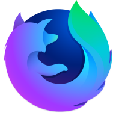
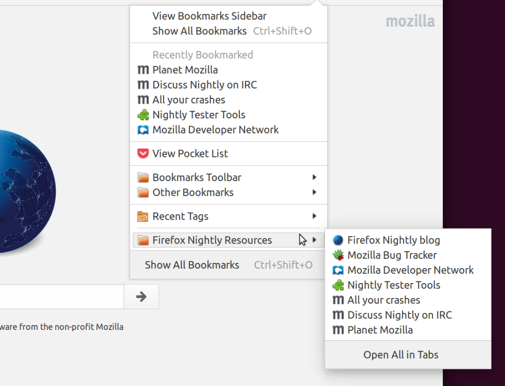
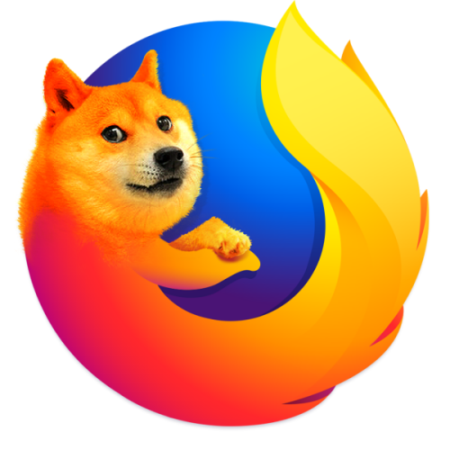
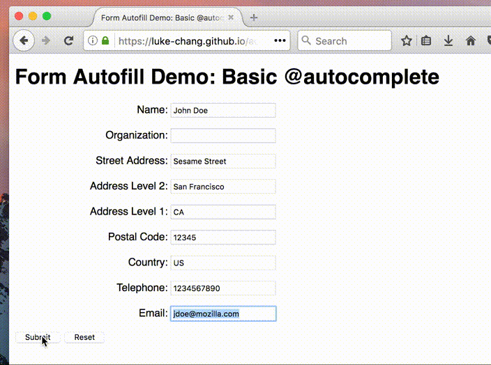
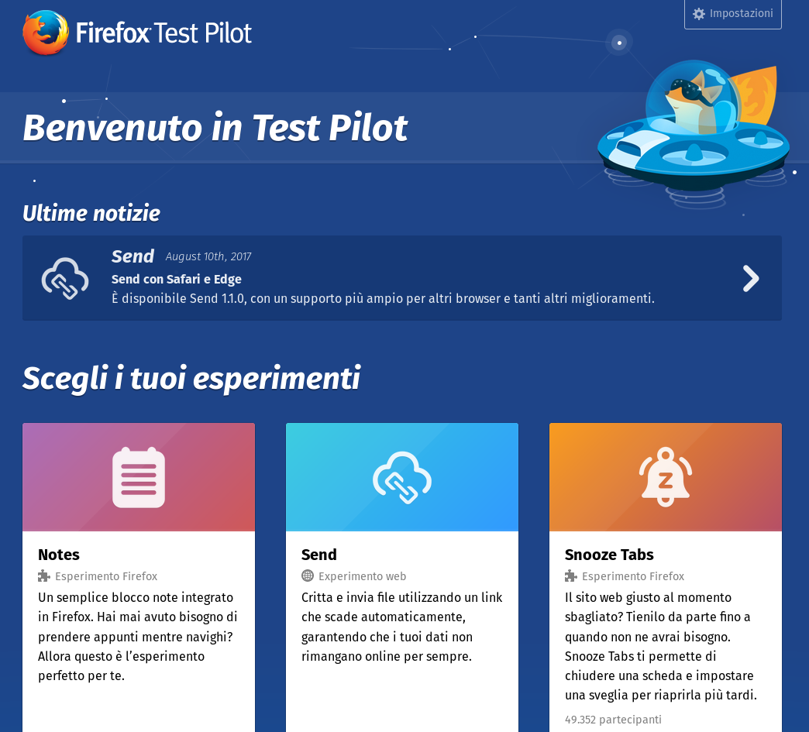
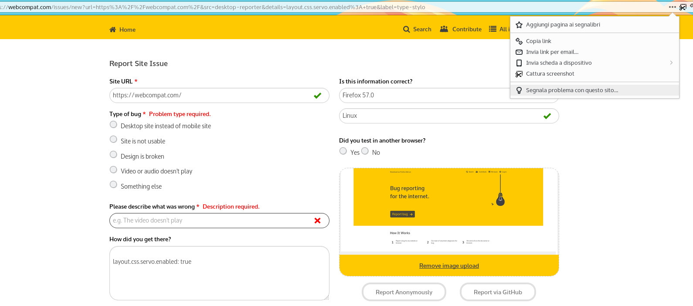

nightly
<reloaded/>
Firefox Nightly in poche parole?

- Compilato ogni giorno (due volte) dal repository mozilla-central (~100 commit al giorno)
- Segnalazione dei Crash e telemetria attivata in modo predefinito
- Molte funzionalità sperimentali sono già attivate
- Anche per Android
- Maestosità/Altro termine++, Stabilità-
Ciclo di rilascio
| 57
| 56
| 55
| 54
| 53
|
|
|
Nightly |
Beta |
Rilascio |
|
Nightly |
Beta |
Rilascio |
|
| Nightly |
Beta |
Rilascio |
|
|
| 6 weeks
| 6 weeks
| 6 weeks
| 6 weeks
| 6 weeks
| 6 weeks
|
Cicli da 8 settimane: Nightly + Developer Edition/Beta = 16 settimane per il rilascio
Perché c'è bisogno di utenti per Firefox Nightly?
- Abbiamo bisogno di segnalazioni di crash per lavorare sulla stabilità
- La Telemetria fornisce informazioni molto utili e importanti
- Persone con conoscenze informatiche possono fare bug report di qualità
- Per rilevare problemi nelle traduzioni
- Se Mozilla vuole rilasciare velocemente nuove funzionalità i problemi sono individuati prima
- Abbiamo bisogno di testing per Quantum
- Per divertirci insieme :-D
- Per creare una comunità di tecnici!
Chi sono gli utenti Nightly?
Febbraio 2017
- 89%
 6%
6%- 5%
Dove e lingue (Feb. 2017)
Top 15 Paesi
| Paesie |
% di utenti Nightly |
| Stati Uniti di America |
16.6 |
| Germania |
9.5 |
| Russia |
5.8 |
| India |
5.4 |
| Indonesia |
5.0 |
| Francia |
3.9 |
| Regno Unito |
3.4 |
| Canada |
2.9 |
| Polonia |
2.4 |
| Ucraina |
2.4 |
| Giappone |
2.0 |
| Australia |
1.8 |
| Brasile |
1.8 |
| Olanda |
1.6 |
| Italia |
1.6 |
Top 15 lingue
| Codice Locale |
% di utenti Nightly |
| en-US |
86.5 |
| ru |
5.2 |
| de |
1.8 |
| fr |
1.5 |
| ja |
0.8 |
| pl |
0.6 |
| en-GB |
0.6 |
| es-ES |
0.4 |
| zh-CN |
0.3 |
| pt-BR |
0.3 |
| it |
0.2 |
| ko |
0.2 |
| uk |
0.2 |
| zh-TW |
0.2 |
| ar |
0.1 |
Preferiti con risorse già disponibili

Altro
- #nightly IRC channel + bridged Telegram group
- Funzionalità sperimentali su https://developer.mozilla.org/en-US/Firefox/Experimental_features

Novità
- Il progetto Quantum ha reso Firefox veramente veloce
- MultiProcesso disponibile in modo predefinito
- Contiene codice scritto in Rust -> servo.org
- Supporta WebAssembly -> websightjs.com
- Nuovo ecosistema di estensioni (veloce, sicuro e affidabile)
- Supporto a WebVR -> mozvr.com
- Telemetria migliorata e più leggera
- Strumenti di sviluppo migliorati
- Nuova interfaccia per le opzioni
- Nuova design e interfaccia
- Firefox Sync integrato tra desktop e mobile
- Integrazione nativa con Pocket (acquisita da Mozilla)
- Abbiamo già detto che è veloce?
Auto completamento dei moduli intelligente

Nuove animazioni (Video non aggiornato)
testpilot.firefox.com

Altre Novità
- Firefox headless
- Possibilità di fare screenshot in Firefox dalla modalità headless
- Il vecchio Addon SDK è stato rimosso
- Animazioni della interfaccia sono asincrone e vettoriali
- Tema chiaro e scuro
- Caricamento di molte funzionalità in Firefox solo quando richiesto
- Payment Request API disponibile (tramite opzione)
- Campi HTML Data/Ora disponibili
- Pulsante WebCompat
Cosa puoi fare per Mozilla?
- Usa la Nightly!
- Attiva la telemetria su Firefox!
- Prova TestPilot!
- Segui Mozilla Italia su Facebook e Twitter
- Leggi e partecipa su Internet Health Report
- Partecipa al progetto WebCompat
Attività per promuovere e segnalare bug di Firefox Nightly
Segnala un sito malfunzionante

Una lista di siti da verificare